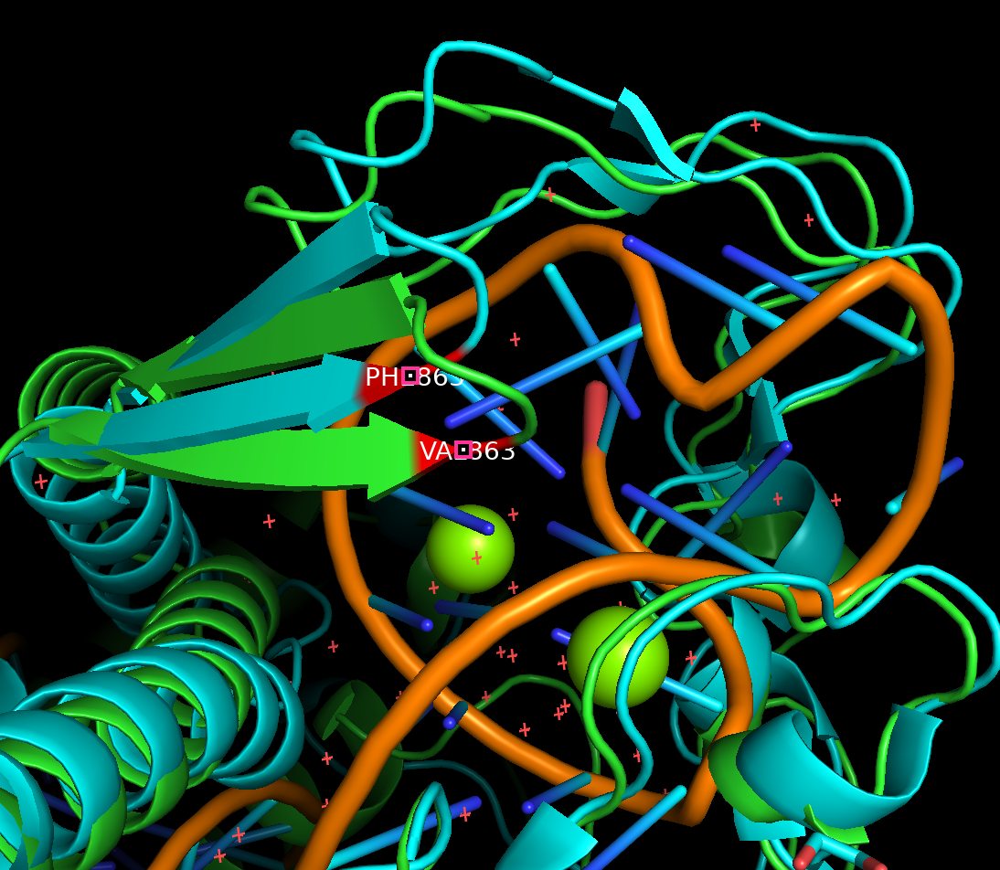

Visualize alphafold2 predicted structure with PYMOL#
In the previous slide we plotted our MSA alignment, the pLDDT scores, and the predicted alignement error. However, it is also useful to visualize the actual predicted protein structure and compare it to the known structure if there is one. Here we use a software called PyMOL to do just that:

Here we see that PyMOL takes either the PDB ID or a PDB file and creates a vizualization for us to examine. If you have not done so already please download PyMOL and open the app. You should see a window like the follwing:

Here we have a:
History Window with log of previous commands
Command Interface to enter PyMOL commands
List of Objects Loaded which list of objects/proteins that have been loaded into PyMOL
Visualization Window to visualize protiens loaded into PyMOL
Let’s try on our data!
Download AlphaFold Output#
First we will need to download our predicted structure pdb file for the mutant, Cas12a mut2-CWF. To this, go to
Files > Home Directory:

Now, click on
cas12a_af2_sp24and download the following file, then click5XUS_mut2cwf_modified_prerun, and downloadranked_0.pdb:

Importing Structures#
To visualize this protein structure in PyMOL, open PyMOL on your computer
Go to File > Open - then choose your pdb file,
ranked_0.pdbThe file we have loaded is the Cas12a-CWF mutant, let’s fetch the structure for the wild type Cas12a protein:
fetch 5xus
We will now align this structure with the Cas12a-CWF mutant. So in the PyMOL command prompt enter:
align ranked_0, 5xus
Viewing Structures#
To view one structure at a time, you can use the
disablecommand to hide one of the structures:
disable 5xus
To see this structure again we can simply use the
enablecommand:
enable 5xus
Visualizing Variants#
Now that we have aligned/colored our structures, let’s select residues on the RuvC Domain on the Cas12a mut2-CWF and the Cas12a wild-type:
select resi 863+952+965+1214 and name CA
[!NOTE]
Note we are only selecting the alpha carbons so that when we label these residues we only have one label per residue
To label these residues we can use the following:
label sele, " %s%s" % (resn,resi)
With these residues selected we can color them to visualize them easier:
color red, sele
Let’s now zoom into this region:
zoom sele
Use your mouse to drag and rotate the structure to take a look at differen angles of it. Locate V863, can you see the difference between wild type protein structure
5XUSand our predicted structureranked_0? To capture this image we can go to
File > Export Image As > PNG... > Save PNG image as ...and enter a name for your image!Alternatively, you can take a screen shot and save.
Reference Paper: Ma et al. 2022
[!NOTE] If you encounter any issues or this doesn’t work as expected, please feel free to reach out to Shirley Li, xue.li37@tufts.edu